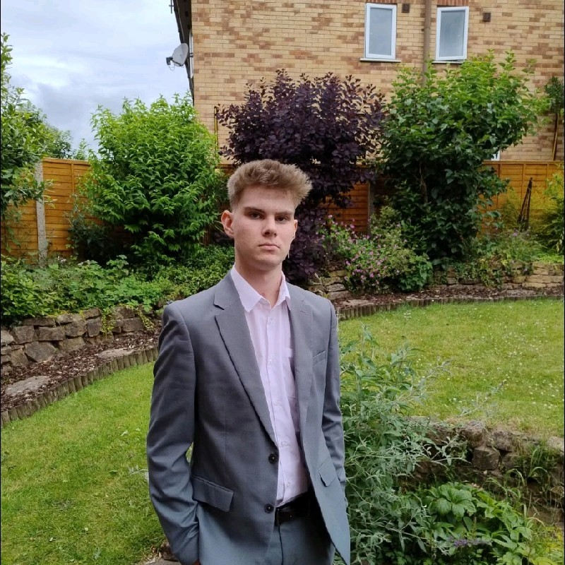

Jack Taylor · Software Engineering Student
Building creative solutions to complex problems.
I am a second-year Software Engineering student passionate about building creative solutions and solving complex problems. My academic journey has equipped me with strong programming skills in languages such as Python, JavaScript and C++, alongside experience in web development using HTML and CSS.
I enjoy bringing ideas to life and tackling challenging problems, having worked on a variety of projects involving different technologies and objectives. My goal is to contribute to the development of meaningful software that makes a positive impact on people's lives. I am eager to apply my skills in real-world environments, collaborate with others and continue developing as a software engineer.
Outside of programming, I enjoy gaming, going to the gym and playing guitar. I also have a keen interest in guitar maintenance, electronics and DIY projects, allowing me to explore my creativity and problem-solving skills beyond software development.
Thank you for visiting my portfolio! Feel free to explore my projects, skills and learning journey. I'm always excited to connect and collaborate with others who share my passion for technology.
